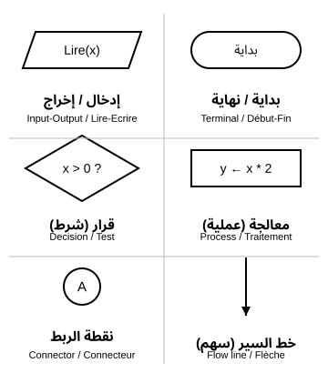
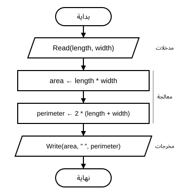
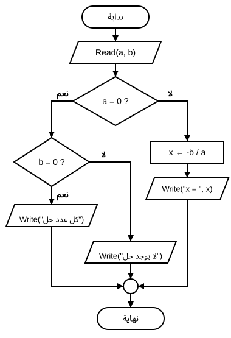
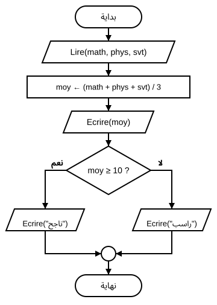
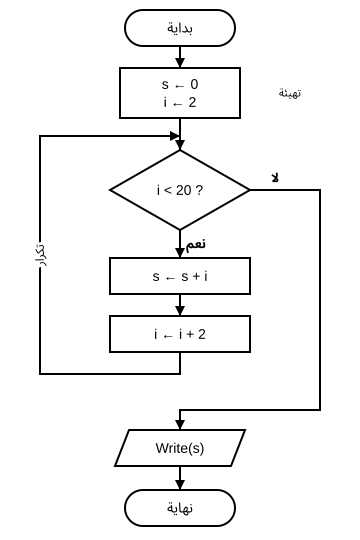

المستوى: السنة الأولى ثانوي (1AS)
المدة الزمنية: ساعتان (ساعة نظرية مع القسم + ساعة تطبيقية بالأفواج)
في نهاية هذه الوحدة، يكون المتعلم قادرًا على أن:
| المرحلة | السؤال المركزي | ناتج التعلّم القابل للملاحظة |
|---|---|---|
| الانطلاق (10 د) | كيف نشرح لآلة لا تفكر طريقة تحضير الشاي؟ | يرتب خطوات حل مشكلة يومية. |
| بناء التعلمات (40 د) | ما عناصر المشكلة؟ وما رموز المخطط؟ | يحلل مسألة ويرسم مخطط المستطيل والمعادلة. |
| التطبيق الموجّه (25 د) | كيف نضيف شرطًا وتكرارًا؟ | يرسم مخطط المعدل ويتتبع حلقة الأعداد الزوجية. |
| الورشة والتقويم (45 د) | هل يعمل مخطط زميلي فعلًا؟ | يرسم مخططًا وينفّذ مخطط زميله بقيم تجريبية. |
تحدٍّ قبل البداية: الحاسوب ينفّذ مليارات العمليات في الثانية، لكنه لا يعرف كيف يحسب معدلك ما لم يشرح له إنسان ذلك خطوة بخطوة. في هذه الوحدة ستتعلم لغة يفهمها كل مبرمج في العالم قبل أن يكتب سطرًا واحدًا: الرسم بالأشكال.
المشكلة (Problem / Problème) وضعية نريد الوصول فيها إلى نتيجة، ولا نعرف الطريق إليها مباشرة. حلها يعني تحديد خطوات مرتبة توصلنا من المعطيات إلى النتيجة.
مثال من الحياة: تحضير كأس شاي.
لو بدّلنا ترتيب الخطوتين 3 و1، لن نحصل على شاي جيد. الترتيب جزء من الحل.
قبل أي حل، نجيب عن ثلاثة أسئلة:
| العنصر | السؤال | مثال الشاي | مثال المعدل الفصلي |
|---|---|---|---|
| المدخلات (Inputs / Entrées) | ماذا أعطي في البداية؟ | الماء، الشاي، السكر | علامات المواد |
| المعالجة (Processing / Traitement) | ماذا أفعل بالمدخلات؟ | التسخين، الخلط، الانتظار | الجمع ثم القسمة |
| المخرجات (Outputs / Sorties) | ماذا أريد في النهاية؟ | كأس شاي | المعدل |
قاعدة ذهبية: «فهم السؤال نصف الجواب». نبدأ دائمًا بالمخرجات: ماذا يُطلب مني؟ ثم نسأل: ماذا أحتاج لأحصل عليه؟
حدّد المدخلات والمعالجة والمخرجات في المسائل الآتية:
المخطط النسقي (Flowchart / Organigramme)، ويسميه الكتاب المدرسي أيضًا المخطط الانسيابي، هو تمثيل بياني لخطوات حل مشكلة من البداية إلى النهاية، باستعمال أشكال هندسية اصطلاحية تربطها أسهم تبيّن اتجاه سير الحل.

| الرمز (وصف الشكل) | الاسم | الدور | مثال داخله |
|---|---|---|---|
| مستطيل بزوايا مستديرة (بيضوي) | بداية / نهاية (Terminal) | أول المخطط وآخره | بداية |
| متوازي أضلاع مائل | إدخال / إخراج (Input/Output) | قراءة معطى أو إظهار نتيجة | Lire(x) |
| مستطيل | معالجة (Process) | حساب أو إسناد قيمة | y ← x * 2 |
| معيّن بمخرجين | قرار (Decision) | سؤال جوابه نعم أو لا | x > 0 ? |
| خط ينتهي برأس سهم | خط السير (Flow line) | يربط الرموز ويبيّن الاتجاه | ↓ |
| دائرة صغيرة | نقطة الربط (Connector) | تجمع عدة مسارات أو تصل جزأين | A |
كيف نقرأ ما بداخل الرموز؟
Lire(x): «اقرأ x»، أي يُدخل المستخدم قيمة x.Ecrire(y): «اكتب y»، أي تظهر قيمة y على الشاشة.y ← x * 2: «يُسند إلى y» ناتج x × 2. السهم ← يعني ضع في.= ≠ < > ≤ ≥، والضرب * والقسمة /.هذه الكلمات (
Lire،Ecrire،←) هي نفسها التي سنستعملها في كتابة الخوارزميات في الوحدة 16.
المسألة: نريد حساب مساحة مستطيل ومحيطه بمعرفة طوله وعرضه.
| العنصر | المحتوى |
|---|---|
| المدخلات | الطول long والعرض larg |
| المعالجة | surface ← long larg ثم perimetre ← 2 (long + larg) |
| المخرجات | المساحة surface والمحيط perimetre |

هذا مخطط متسلسل (Sequential): تُنفّذ الخطوات واحدة بعد الأخرى دون أي اختيار.
نجرب بالقيم long = 5 وlarg = 3:
| الخطوة | long | larg | surface | perimetre | Ecrire |
|---|---|---|---|---|---|
Lire(long, larg) | 5 | 3 | |||
surface ← long * larg | 5 | 3 | 15 | ||
perimetre ← 2 * (long + larg) | 5 | 3 | 15 | 16 | |
Ecrire(surface, " ", perimetre) | 5 | 3 | 15 | 16 | 15 16 |
المسألة: حل المعادلة ax + b = 0 حيث a وb عددان حقيقيان يُدخلهما المستخدم.
a ≠ 0: للمعادلة حل وحيد x = -b / a.a = 0 وb = 0: تصبح 0 = 0، فكل عدد حقيقي حل.a = 0 وb ≠ 0: تصبح b = 0 وهذا خطأ، فلا يوجد حل.لا يمكن القسمة على صفر، ولهذا نختبر قيمة a أولًا قبل حساب
-b / a.
المعيّن يطرح سؤالًا جوابه نعم أو لا، ويتفرّع المخطط إلى طريقين. هنا نحتاج قرارين: الأول على a، والثاني على b.

تلتقي الطرق الثلاثة في نقطة الربط قبل «نهاية»، فيبقى للمخطط نهاية واحدة.
| a | b | الطريق المتّبع | المخرج المنتظر |
|---|---|---|---|
| 2 | -6 | a = 0 ? لا | x = 3 |
| 0 | 0 | a = 0 ? نعم ← b = 0 ? نعم | كل عدد حل |
| 0 | 5 | a = 0 ? نعم ← b = 0 ? لا | لا يوجد حل |
نصيحة المبرمج: اختبر كل فرع من المخطط بقيمة واحدة على الأقل؛ الفرع الذي لم تختبره قد يخفي خطأ.
المسألة: حساب معدل ثلاث مواد أساسية (الرياضيات، العلوم الفيزيائية، علوم الطبيعة والحياة) بمعاملات متساوية، ثم إظهار «ناجح» إذا كان المعدل أكبر من أو يساوي 10، و«راسب» في غير ذلك.
| العنصر | المحتوى |
|---|---|
| المدخلات | math، phys، svt |
| المعالجة | moy ← (math + phys + svt) / 3 ثم الاختبار moy ≥ 10 |
| المخرجات | المعدل moy والملاحظة |

| math | phys | svt | moy | المخرج |
|---|---|---|---|---|
| 12 | 9 | 15 | 12 | 12 ناجح |
| 8 | 10 | 9 | 9 | 9 راسب |
| 10 | 10 | 10 | 10 | 10 ناجح |
انتبه: عتبة النجاح في الجزائر هي 10 من 20، والشرط
moy ≥ 10(وليسmoy > 10)، لأن من تحصّل على 10 بالضبط ناجح. الحالة الحدّية (10) هي أهم قيمة تختبرها.
المطلوب: 2 + 4 + 6 + … + 18. يمكن كتابة الأعداد التسعة واحدًا واحدًا، لكن لو طُلب مجموع الأعداد الزوجية الأقل من 1000، فسنحتاج إلى كتابة 499 عددًا!
الحل: نكتب العملية مرة واحدة ونجعل المخطط يعود إلى الوراء ليكررها. هذا هو التكرار أو الحلقة (Loop / Boucle):
s يجمع النتيجة، ويبدأ من 0.i هو العدد الزوجي الحالي، ويبدأ من 2 ويزيد بـ 2 في كل دورة.i < 20 ? يحدد متى نتوقف.
السهم الذي يصعد على اليسار هو سهم العودة: ما دام الجواب «نعم»، نعيد الجمع والزيادة.
| الدورة | i < 20 ? | s | i | Ecrire |
|---|---|---|---|---|
| التهيئة | — | 0 | 2 | |
| 1 | نعم | 2 | 4 | |
| 2 | نعم | 6 | 6 | |
| 3 | نعم | 12 | 8 | |
| 4 | نعم | 20 | 10 | |
| 5 | نعم | 30 | 12 | |
| 6 | نعم | 42 | 14 | |
| 7 | نعم | 56 | 16 | |
| 8 | نعم | 72 | 18 | |
| 9 | نعم | 90 | 20 | |
| الخروج | لا | 90 | 20 | 90 |
المخرج: 90. (العدد 0 زوجي أيضًا، لكن إضافته لا تغيّر المجموع.)
أخطاء شائعة:
i ← i + 2: تبقى i = 2 ويدور المخطط بلا نهاية.i ≤ 20: يُضاف 20 فيصبح المجموع 110 بدل 90.s ← 0 في البداية: نجمع على قيمة مجهولة.| الأداة | الاستعمال | ملاحظة |
|---|---|---|
| الورقة والقلم | الطريقة الأولى والأسرع | المسودة قبل أي برنامج |
| draw.io (diagrams.net) | رسم مخطط نظيف وطباعته | مجاني، في المتصفح أو كبرنامج مثبّت |
| Flowgorithm | تشغيل المخطط وإدخال القيم ورؤية النتيجة | مجاني لنظام Windows، واجهته بالإنجليزية |
في draw.io: من قائمة الأشكال اختر مجموعة Flowchart، واسحب الرموز ثم اربطها بالأسهم. وفي Flowgorithm تختلف بعض الأشكال قليلًا عن الكتاب، فاعتمد دائمًا رموز هذا الدرس في الامتحان.
الوضعية: فريقان من المبرمجين يتبادلان الحلول. لا يُقبل أي مخطط قبل أن ينفّذه زميل آخر بيده ويحصل على النتيجة الصحيحة.
العمل: في ثنائيات — المدة: 30 دقيقة — الوسيلة: ورقة، أو draw.io إن توفر.
| المهمة | ما يجب إنجازه | مؤشر النجاح |
|---|---|---|
| 1 | تحليل المسألة المعطاة في جدول (مدخلات، معالجة، مخرجات) | الجدول مكتمل ومتّفق عليه |
| 2 | رسم المخطط النسقي بالرموز الصحيحة | بداية ونهاية واحدة، كل سهم برأس |
| 3 | تبادل المخطط مع الثنائي المجاور | — |
| 4 | تنفيذ مخطط الزملاء بيدك بالقيم التجريبية | النتيجة مطابقة للمخرج المنتظر |
| 5 | كتابة ملاحظة واحدة لتحسين مخطط الزملاء | ملاحظة دقيقة (رمز، سهم، شرط) |
المسائل الموزعة (لكل ثنائي مسألة):
| المسألة | قيمة تجريبية | المخرج المنتظر |
|---|---|---|
مساحة ومحيط دائرة (PI = 3.14) | r = 5 | 78.5 و 31.4 |
تحويل درجة الحرارة: F ← C * 9 / 5 + 32 | C = 25 | 77 |
| أكبر عددين | 7 و 12 | 12 |
عدد زوجي أم فردي (n mod 2 = 0 ?) | 14 ثم 7 | زوجي ثم فردي |
n mod 2هو باقي قسمة n على 2: يساوي 0 إذا كان n زوجيًا.
q قطعة سعر الواحدة p». مثال: q = 4، p = 25 ← 100.Lire(n)، s ← s + n، n > 0 ?، Ecrire(s)؟surface ← long * larg ثم يقرأ Lire(long, larg). ما الخطأ؟ وكيف نصلحه؟≥ 10 و«راسب» في غير ذلك. اختبره بـ 10 (ناجح) و9.5 (راسب).100.s ← s + i؟ وكم مرة يُطرح السؤال i < 20 ?؟قبل مغادرة الحصة، اكتب في دقيقة واحدة:
يستعملها الأستاذ لبداية الحصة التالية: يُجيب عن السؤال المتكرر ويصحّح المفهوم الخاطئ الشائع.
q وp؛ المعالجة t ← q * p؛ المخرج t. مع q = 4 وp = 25 نحصل على 100.Lire(n) وEcrire(s) في متوازي أضلاع؛ s ← s + n في مستطيل؛ n > 0 ? في معيّن.Lire(long, larg) قبل رمز المعالجة.Lire(moy) ← معيّن moy ≥ 10 ? ← نعم: Ecrire("ناجح") / لا: Ecrire("راسب") ← نقطة ربط ← نهاية. القيمة 10 تعطي «ناجح» لأن الشرط ≥.i ← 1 ونُبقي i ← i + 2: 1 + 3 + … + 19 = 100.s ← s + i يُنفَّذ 9 مرات؛ السؤال يُطرح 10 مرات (9 بجواب نعم + مرة بجواب لا).المخطط النسقي يُرى، والخوارزمية تُكتب. في الوحدة 16 سنكتب الحل نفسه نصًّا، سطرًا بسطر، بكلمات قريبة جدًا مما وضعناه داخل الرموز. هذه لمحة عن مخطط المستطيل مكتوبًا خوارزمية:
Algorithme Rectangle
Var
long, larg, surface, perimetre : Réel
Début
Lire(long, larg)
surface ← long * larg
perimetre ← 2 * (long + larg)
Ecrire(surface, " ", perimetre)
Fin
قارن: كل رمز في المخطط أصبح سطرًا، و«بداية / نهاية» أصبحتا Début وFin.
| المصطلح | العربية | الشرح المختصر |
|---|---|---|
| Problem / Problème | المشكلة (المسألة) | وضعية نبحث لها عن حل بخطوات مرتبة |
| Inputs / Entrées | المدخلات | المعطيات التي نبدأ بها |
| Processing / Traitement | المعالجة | العمليات المطبقة على المدخلات |
| Outputs / Sorties | المخرجات | النتائج المطلوبة |
| Flowchart / Organigramme | المخطط النسقي (الانسيابي) | تمثيل بياني لخطوات الحل بالرموز |
| Terminal | بداية / نهاية | الرمز البيضوي في طرفي المخطط |
| Decision / Test | القرار (الشرط) | معيّن بسؤال جوابه نعم أو لا |
| Connector / Connecteur | نقطة الربط | دائرة تجمع المسارات |
| Assignment / Affectation | الإسناد ← | وضع قيمة في متغير |
| Loop / Boucle | الحلقة (التكرار) | إعادة خطوات ما دام الشرط صحيحًا |
| Trace table | جدول التتبع | جدول قيم المتغيرات خطوة بخطوة |